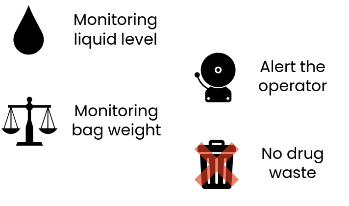
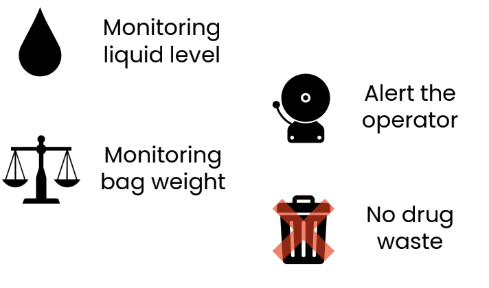
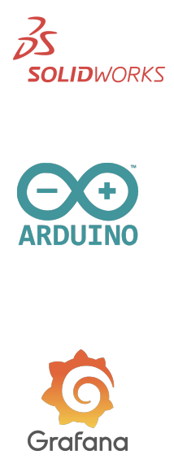
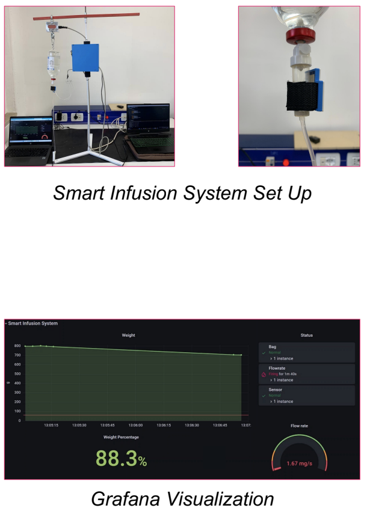

Smart Infusion System
Gianluca Alberizzi, Anna Benaglia, Federica Ciceri Negri, Christian Dieni, Giorgia Ladislao
Background
Infusion therapy is one of the most widely used techniques in hospitals and clinics, and nevertheless some problems are still apparent.
The medical issue concerns the air intake into the tube below the drip chamber; in this case all the set is usually thrown away. This is a huge economic issue especially for the most expensive drugs.
In order to avoid drugs handling and to save time for the operators, we developed with Kalpa a "Smart Infusion System".
The medical issue concerns the air intake into the tube below the drip chamber; in this case all the set is usually thrown away. This is a huge economic issue especially for the most expensive drugs.
In order to avoid drugs handling and to save time for the operators, we developed with Kalpa a "Smart Infusion System".
Aim
Creating a wireless remote communication system to collect data from sensors and send information to the cloud.


Materials and Methods
• SolidWorks for CAD design
• 3D printing material: PLA
• Arduino IDE for firmware
development
• Grafana for graphical
visualization of the
acquired data

• 3D printing material: PLA
• Arduino IDE for firmware
development
• Grafana for graphical
visualization of the
acquired data
Device
Hardware
Software

- Load cell: to collect data about
weight change during time of the infusion bag -
Capacitive mono-level sensor: can detect
the level of the liquid in the drip chamber -
Led and buzzer: to alert the operators and
avoid the entry of air in the tube -
ESP32: a cost-effective board that connects
all the hardware components, with integrated
Wi-Fi connection
Software
- Grafana
Different panels for every infusion system:
Weight trend
Alarms list
Weight %
Flow rate
Target Market
Hospitals and clinics
TAM
Total addressable market
Whoever uses infusion bags
SAM
Serviceable addressable market
Whoever wants to apply smart technology to infusion bags
SOM
Serviceable obtainable market
Hospitals and clinics willing to apply smart technology to infusion bags
Future developments
- PCB realization
- Combined use with mechanical lock
- Battery-powered device
- Link monitoring data to patient's medical record